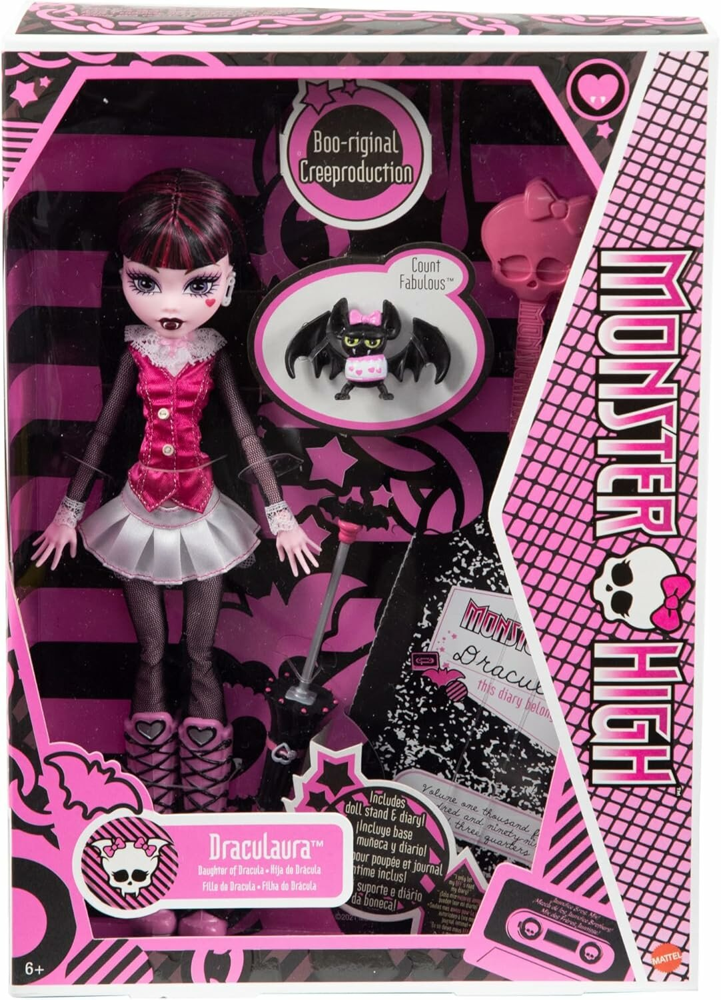

Дракулаура
Дочь Дракулы

История персонажа
Дракулаура - 1600-летняя вампирша, дочь легендарного графа Дракулы. В отличие от своего отца, она вегетарианка и питается исключительно "фальшивой кровью" из пакетиков. Эта милая и жизнерадостная девушка обожает все милое, особенно японскую культуру кавайи.
Несмотря на свой возраст, Дракулаура ведет себя как типичный подросток - увлекается модой, ведет блог и обожает шопинг. Она превратила свой гроб в уютную розовую спальню с плюшевыми игрушками. Ее лучшие подруги - Клаудин Вульф и Гулия Йелпс.
Дракулаура обладает магическими способностями - может превращаться в летучую мышь и гипнотизировать людей. Ее стиль сочетает готические элементы с розовыми акцентами и милыми аксессуарами.
Коллекции кукол
- Original (2010) - Классический образ с розово-черным платьем
- Sweet 1600 (2011) - Праздничный наряд на 1600-летие
- Gloom Beach (2011) - Пляжный комплект с зонтиком от солнца
- Dead Tired (2011) - Пижама с милыми тапочками-монстриками
- Skull Shores (2012) - Тропический вариант с купальником
- Ghouls Rule (2012) - Хэллоуинский костюм ведьмы
- 13 Wishes (2013) - Волшебный образ с элементами востока
- Scaris: City of Frights (2013) - Парижский шик с элегантным беретом
Интересные факты
- Дракулаура - одна из самых популярных кукол Monster High
- Ее питомец - летучая мышь по имени Граф Кровушка
- Обожает суши и клубничное мороженое
- Ведет видеоблог "Дневники вампирши"
- Ее любимый цвет - розовый (хотя традиционно вампиры предпочитают черный и красный)
- Может загораться на солнце, поэтому всегда носит солнцезащитный зонтик